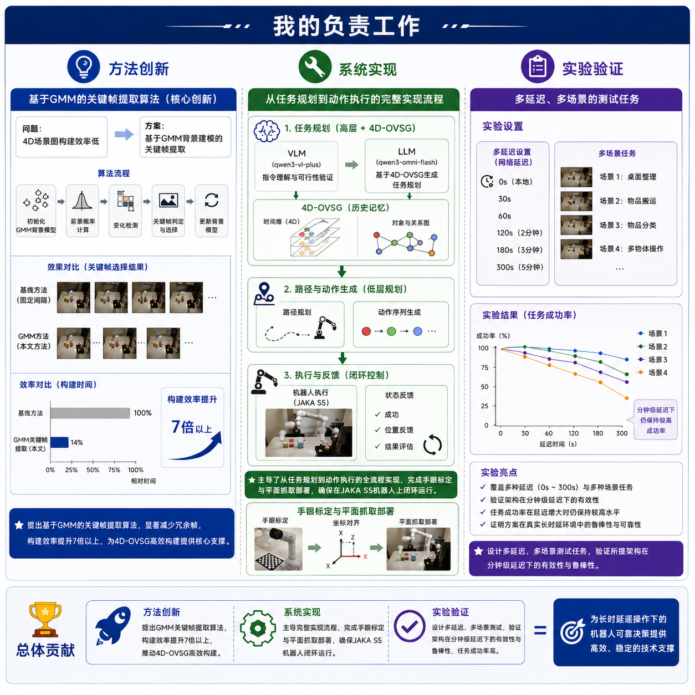
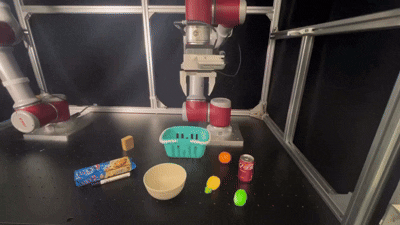
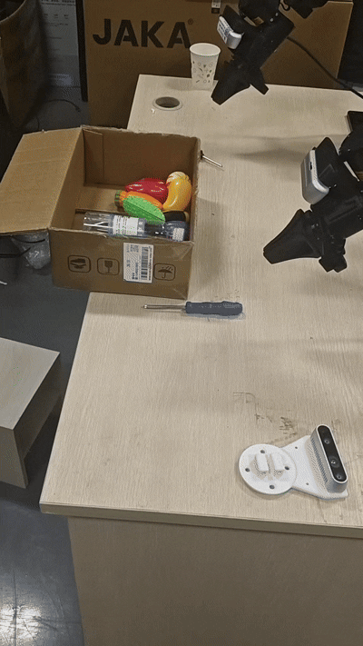
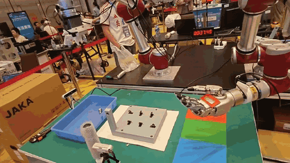
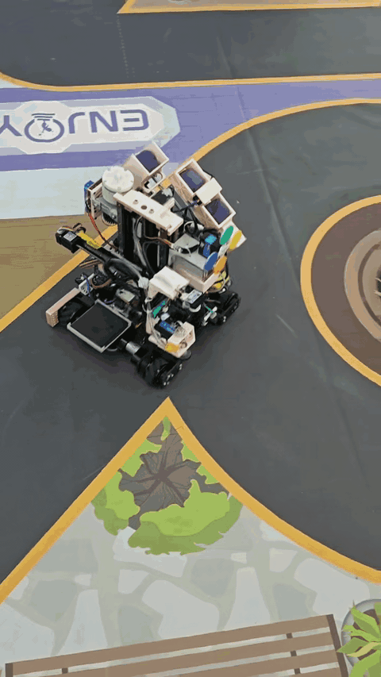
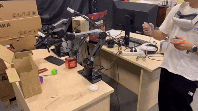
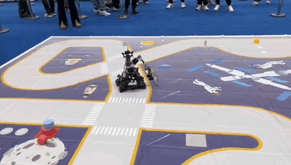
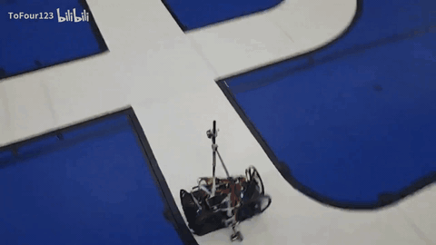

Zekai Lin 林泽锴
About
I am currently an undergraduate student in Mechatronic Engineering at South China University of Technology, ranked 1/141 in my major. I will join the University of Science and Technology of China as a master's student in Control Science and Engineering. Previously, I worked as a research intern at the School of Artificial Intelligence, Shanghai Jiao Tong University.
My research interest is Robotics and Embodied AI, with a focus on dexterous manipulation. My research goal is to build generalizable and dexterous robot policies that can reliably operate in the open world. I have hands-on experience across the full embodied-AI stack: teleoperation data collection, imitation learning / VLA post-training, and real-robot deployment.
News
Publications

Prior-GA: Few-Shot In-Context Imitation Learning via Prior-Guided Graph Alignment for Robotic Manipulation
We diagnose a key bottleneck of in-context imitation learning — attention dilution caused by the low ratio of task-relevant point clouds — and propose a prior-guided graph alignment pipeline: VLM-based Task-ROI extraction plus FPFH/ICP prior registration. With a single demonstration, RLBench success rate improves from 27.78% to 72.22% (+44.4pp), with translation error ↓75.6% and rotation error ↓63.8%.

Embodied Multimodal World Modeling with 4D Scene Graphs for Long-Distance Teleoperation
We propose a GMM-based keyframe extraction algorithm that improves 4D scene graph construction efficiency by over 7×, together with a coupled hierarchical planning architecture. Validated on JAKA S5 across 0–300s six-level network latency and 4 task scenarios, the system maintains high success rates even under minute-level delays.
Projects

π0.5 VLA Post-Training & Real-Robot Deployment
Full-stack pipeline from teleoperation data collection to real-robot deployment on Piper / JAKA S5. VR-based dual-arm teleoperation system (Meta Quest3), 14-DoF bimanual states + three RGB-D streams. π0.5 LoRA post-training with edge-side deployment.

Learned Policy Real-Robot Deployment
Deployed learned manipulation policies on the Piper arm for tabletop grasping. ROS2-based RGB-D streaming, inference and control pipelines for real-time closed-loop execution.

Zhuhai Int'l Dexterous Manipulation Challenge · 4th
Dual JAKA arms with a LinkerHand five-fingered dexterous hand for peg-in-hole and object sorting tasks under strict time constraints.

National Intelligent Car Competition · National First Prize (3rd)
Team leader. Designed an X-Z 4-DoF manipulator from scratch; PD control with visual end compensation cut alignment time from 20.7s to 1.5s. Jetson Orin Nano multi-process system, 100% completion rate across ~20 national-round runs.
More projects

Piper Dual-Arm Teleoperation
Master-slave dual-arm teleoperation data collection, supporting both joint-space and Cartesian-space control.

BUAA Autonomous Driving Challenge · Silver
Lunar-themed tracked mobile robot with autonomous navigation and on-site manipulation.

LinkerHand Dexterous Hand
Five-fingered dexterous hand integration and debugging for manipulation tasks.

Hovercraft Racing
Autonomous navigation through roundabouts and intersections in the National Intelligent Car Competition.